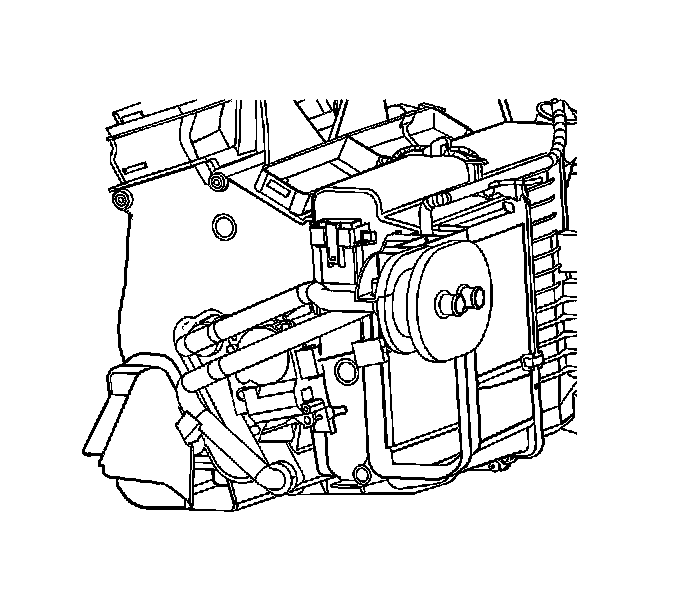
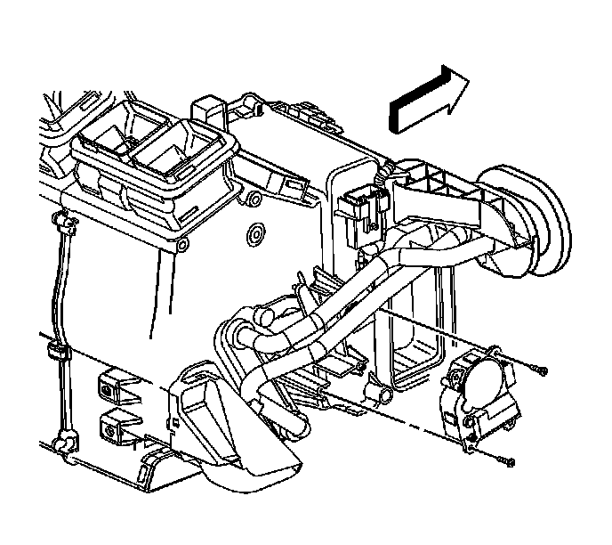

Air Temperature Actuator Replacement - Right Side
Air Temperature Actuator Replacement - Right Side
Removal Procedure
1. Remove the right closeout panel. Refer to Instrument Panel Insulator Panel Replacement - Right Side (Left Hand Drive) (Service and Repair)Instrument Panel Insulator Panel Replacement - Right Side (Right Hand Drive) (Service and Repair) .

2. Remove the instrument panel compartment. Refer to Instrument Panel Compartment Replacement (Left Hand Drive) (Service and Repair)Instrument Panel Compartment Replacement (Right Hand Drive) (Service and Repair) .
3. Disconnect the right air temperature actuator electrical connector.

4. Remove the right air temperature actuator screws.
5. Remove the right air temperature actuator.
Installation Procedure
1. Install the right air temperature actuator.
Notice: Refer to Fastener Notice .
2. Install the right air temperature actuator screws.
Tighten the screws to 1 N.m (9 lb in).
3. Connect the right air temperature actuator electrical connector.
4. Install the instrument panel compartment. Refer to Instrument Panel Compartment Replacement (Left Hand Drive) (Service and Repair)Instrument Panel Compartment Replacement (Right Hand Drive) (Service and Repair) .
5. Install the right closeout panel. Refer to Instrument Panel Insulator Panel Replacement - Right Side (Left Hand Drive) (Service and Repair)Instrument Panel Insulator Panel Replacement - Right Side (Right Hand Drive) (Service and Repair) .